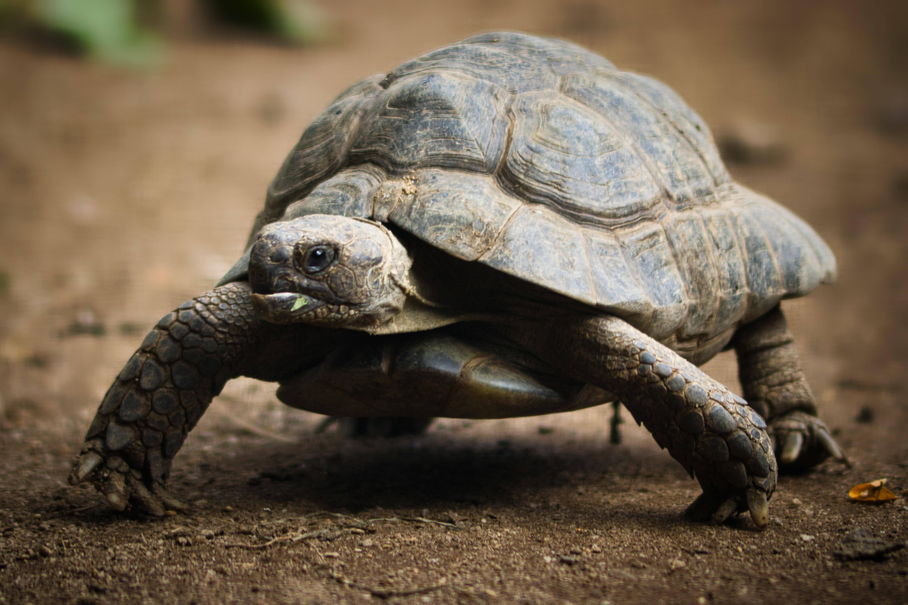

Green sea turtles (Chelonia mydas) are large marine reptiles growing up to 4 feet long and 440 pounds, distinguished by their smooth, heart-shaped carapace that appears olive-green from algae, powerful flippers for swimming, and serrated jaws suited for grinding seagrasses and algae as primarily herbivorous adults.
Habitat
Green sea turtles inhabit warm tropical and subtropical waters worldwide, favoring shallow coastal bays, coral reefs, seagrass beds, salt marshes, and protected shores near continents or islands where ocean temperatures stay above 7-10°C. They forage in inshore flats and meadows by day, retreating to rock ledges, reefs, or oyster bars at night, with major nesting beaches in over 80 countries like Florida, which hosts thousands of nests annually.
Behavior
Solitary foragers, they spend days grazing on seagrasses and algae, surfacing regularly to breathe while holding breath 4-7 hours during rest or dives. Females migrate thousands of miles to natal beaches every 2-4 years to nest, laying 100-200 eggs multiple times per season; adults show site fidelity to resting spots and bask on shores or rocks for thermoregulation in some regions like Hawaii.
Adaptations
Paddle-like foreflippers propel efficient long-distance swimming, while non-retractable neck and limbs streamline the body; they slow heart rates to 1 beat per 9 minutes during dives for oxygen conservation. Cold-blooded metabolism allows months-long fasting and mud hibernation in chilly lagoons via cloacal respiration; basking raises body temperature to boost activity.
Green Sea Turtle
Chelonia mydas

Overview
While all tortoises are turtles, not all turtles are classified as tortoises. This distinction is drawn based on several unique physical attributes that set them apart from other members of the turtle family. Tortoises have column-like hind legs and elephantine front legs suited for locomotion on solid ground. They are also equipped with sharp claws that allow them to easily dig burrows and traverse different terrains.
Habitat
Large, spacious areas are needed. Indoor setups can use bookshelves or custom wooden tables, while outdoor setups require secure fencing. Provide a dry, insulated, and secure hide box for sleeping and protection from the elements. Substrates should mimic their natural environment and allow digging. Good options include cypress mulch, coco coir, or topsoil, and it should be kept slightly moist for hydration.
Behavior
Tortoises are generally docile, solitary, and diurnal creatures that spend their days foraging, basking, and digging. They are territorial, with males often displaying aggression through ramming, biting, and flipping rivals. Common behaviors include digging, climbing, head-bobbing, and in some species, hiding or burrowing to escape extreme heat or cold
Adaptations
Tortoises have evolved specialized adaptations for terrestrial survival, primarily a hard, domed shell (carapace) with protective scutes for defense. Key adaptations include shovel-like front legs for digging burrows to escape heat and predators, the ability to store water in large bladders, and a low metabolism allowing them to survive on scarce food/water.
Tortoise
Testudinidae
Overview
The Aldabra giant tortoise (Aldabrachelys gigantea) is one of the largest tortoise species in the world, reaching over 4 feet (1.2 m) in length and weighing up to 550 pounds (250 kg). These long-lived reptiles can survive for more than 100 years and are known for their massive domed shells and thick, column-like legs.
Habitat
They are native to the Aldabra Atoll in the Seychelles, inhabiting grasslands, scrub forests, and mangrove swamps. They thrive in warm, tropical climates and are often found grazing in open areas or resting in shaded vegetation.
Behavior
Aldabra tortoises are slow-moving herbivores that spend most of their day grazing on grasses, leaves, and woody plants. They are generally solitary but may gather in groups around food sources. During extreme heat, they rest in shade or wallow in mud to stay cool.
Adaptations
Their large size and thick shells provide protection from predators. They can store water and nutrients, allowing survival during droughts. Their long necks help them reach higher vegetation, and their slow metabolism supports long lifespans and low energy needs.